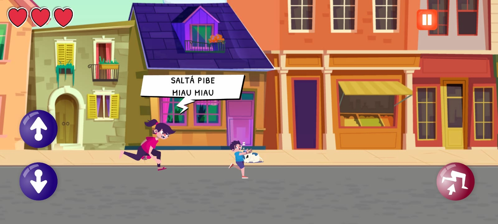
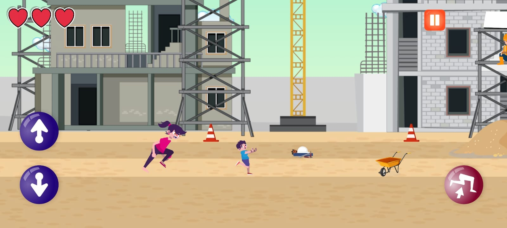
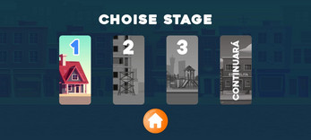
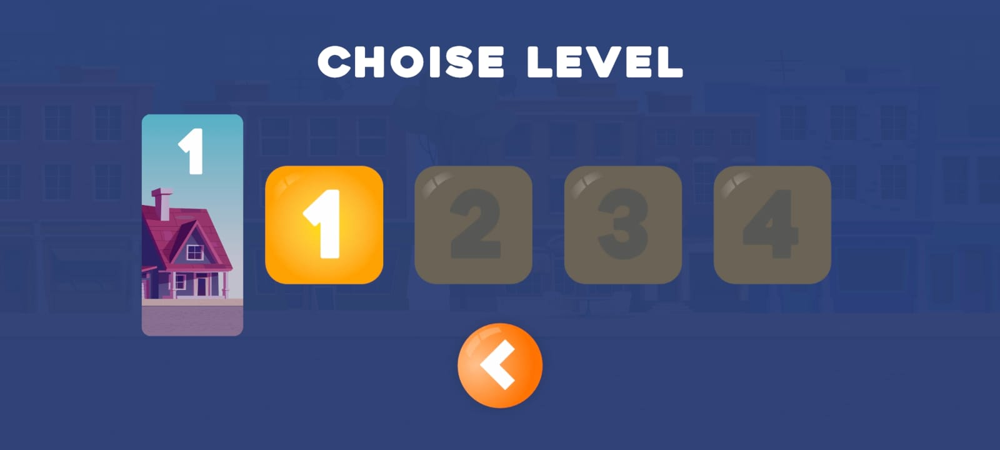
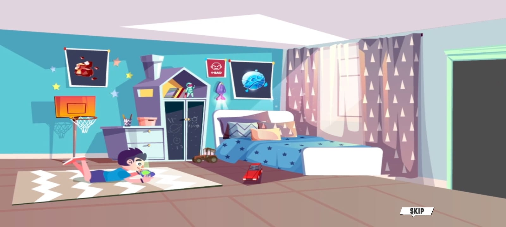

Ay Chanda! is a mobile endless runner developed as the final university project for the Video Game Design program. The project was created by a multidisciplinary team over three months, following an Agile workflow to simulate a professional game development environment.
Beyond building a complete game, the project focused on applying collaborative development practices, project planning, and iterative production from concept to delivery.
Gameplay Programmer, UI Programmer & Designer
During the project, I was responsible for designing and implementing the game's mobile user interface while developing core gameplay systems. My main responsibilities included:
One of the biggest challenges was coordinating a team of eight developers who had little previous experience working together on a project of this scale. To address this, we adopted Agile practices throughout development, including:
This experience gave me first-hand exposure to collaborative game production and reinforced the importance of communication, planning, and organized workflows.
This project taught me that building a successful game requires much more than writing code. Effective communication, task organization, and teamwork were essential to keeping the project on schedule and delivering a polished final product.
Working within an Agile environment also strengthened my ability to collaborate with multidisciplinary teams, adapt to changing requirements, and contribute effectively throughout the entire development process.




